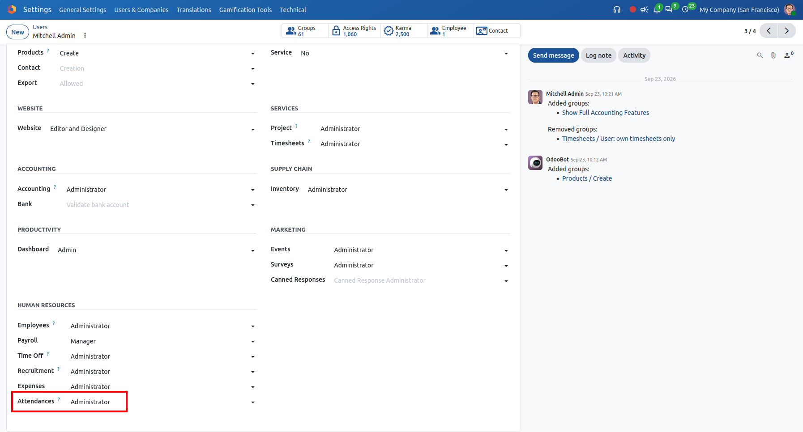
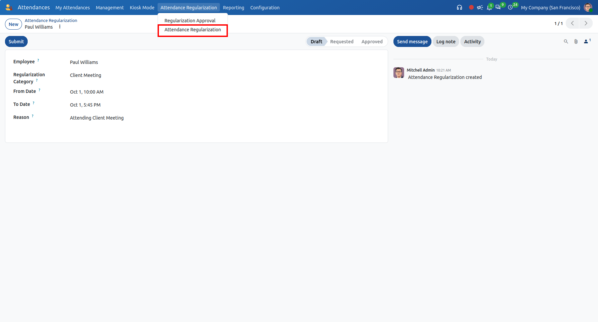
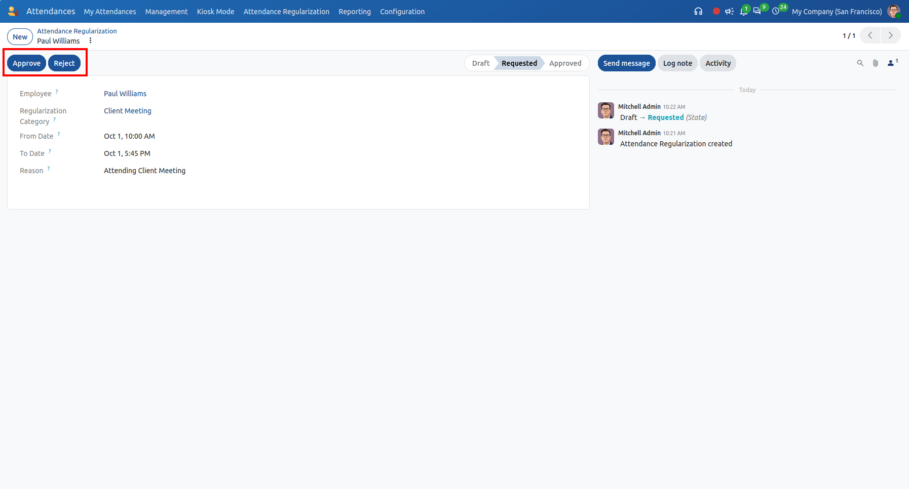
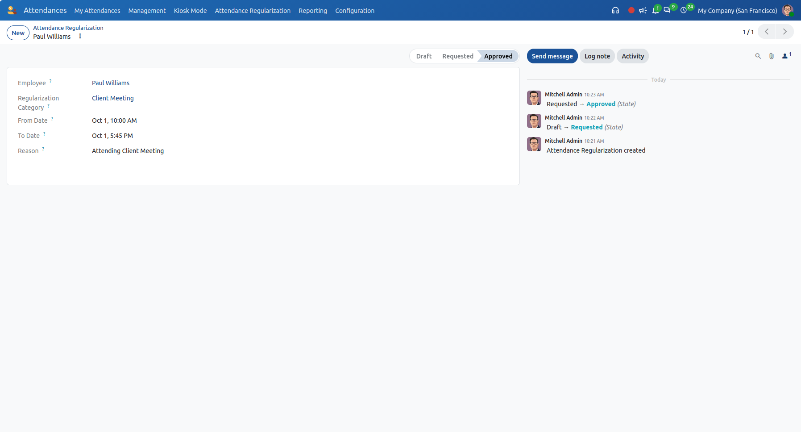
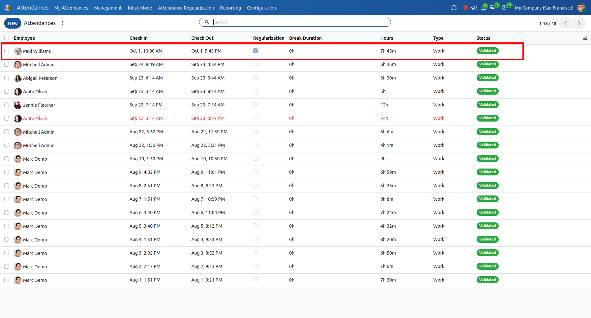

Odoo 20 Attendance Regularization
Enable employees to submit attendance corrections for missing check-ins, onsite visits, and client meetings with a structured multi-tier approval workflow and automated attendance generation.
Key Features and Highlights
Designed to eliminate attendance gaps, ensure fair working hour calculations, and maintain transparent audit trails for accurate payroll.
Structured 4-Stage Approval Workflow
Tracks each regularization case through Draft, Requested, Approved, and Rejected states with full audit logging in the chatter.
Self-Service Employee Request Submission
Employees easily log missed punches or onsite assignments with automatic user binding, while strict constraints restrict them to their own records.
Automated Attendance Generation
Approving a request instantly creates an official attendance record in Odoo with exact check-in, check-out, and computed worked hours.
Configurable Regularization Categories
Define customizable categories such as Onsite Client Duty, Business Travel, Client Meeting, or Missed Punch under Attendances Configuration.
Dedicated Manager Approval Queue
A dedicated "Regularization Approval" menu filters active pending requests, allowing HR managers to batch review and validate efficiently.
Transparent Regularization Audit Flag
Marks generated attendance records with a "Regularization" boolean flag in attendance views, clearly distinguishing them from kiosk punches.
User Access Rights & Manager Privileges Configuration
Configure employee and manager roles under Settings → Users & Companies → Users. Assigning "Attendances: Administrator" grants management authorization to approve or reject regularization requests, while standard users can submit requests strictly for themselves.

Create & Submit Attendance Regularization Request
Under Attendances → Attendance Regularization → Attendance Regularization, click New to create a request. The employee auto-populates for standard users. Select a Regularization Category, define From Date and To Date, provide a detailed reason, and click "Submit".

Managerial Review & Approval / Rejection Workflow
Upon submission, the request moves to the "Requested" state. Attendance Managers can review the submitted justification and timeframe, then execute their decision using the prominent "Approve" or "Reject" header action buttons.

Approved State & Case History Audit Trail
When approved, the state shifts to "Approved" with tracking in the statusbar. The built-in Odoo chatter records who created the request, when it transitioned from Draft to Requested, and when it was finalized as Approved.

Automated Attendance Creation with Regularization Indicator
Approving the request automatically generates a valid attendance record with the employee's check-in, check-out, and computed hours. The "Regularization" checkbox is checked, making regularized records easily identifiable in Attendances reporting.

Self-Service Regularization Requests
Employees submit missed or incorrect attendance requests directly from the Attendances menu, automatically linked to their profile.
Strict User-Employee Binding
Rigorous security access rules and Python model constraints prevent regular employees from submitting or viewing requests for others.
Configurable Categories Master
Managers can define custom regularization categories (e.g. Onsite, Business Trip, Client Meeting, Missed Punch) under Configuration.
Timeline Date Constraint
Built-in validation constraint enforces that the "To Date" must be greater than or equal to the "From Date", preventing invalid intervals.
Dedicated Approval Queue
Managers access a filtered "Regularization Approval" view displaying only active, unapproved requests for rapid decision making.
Automatic Attendance Generation
Clicking Approve immediately generates a valid `hr.attendance` record with check-in, check-out, employee, and worked hours.
Regularization Indicator Flag
Attaches a boolean "Regularization" flag to generated attendance records, visible in both list and form views for clear auditing.
Full Chatter & Activity Tracking
Integrates with Odoo mail chatter to track creation, state transitions, rejection reasons, and management communications.
Changelog & Version History
Continuous updates, performance optimizations, and official compatibility releases.
Initial commit for Open HRMS Attendance Regularization.
Certified Odoo Implementation & Support
Related HR Modules
Need Customization or Migration Assistance?
Our certified team of 150+ Odoo professionals is ready to assist with deployment, attendance tracking workflows, and seamless enterprise integrations.